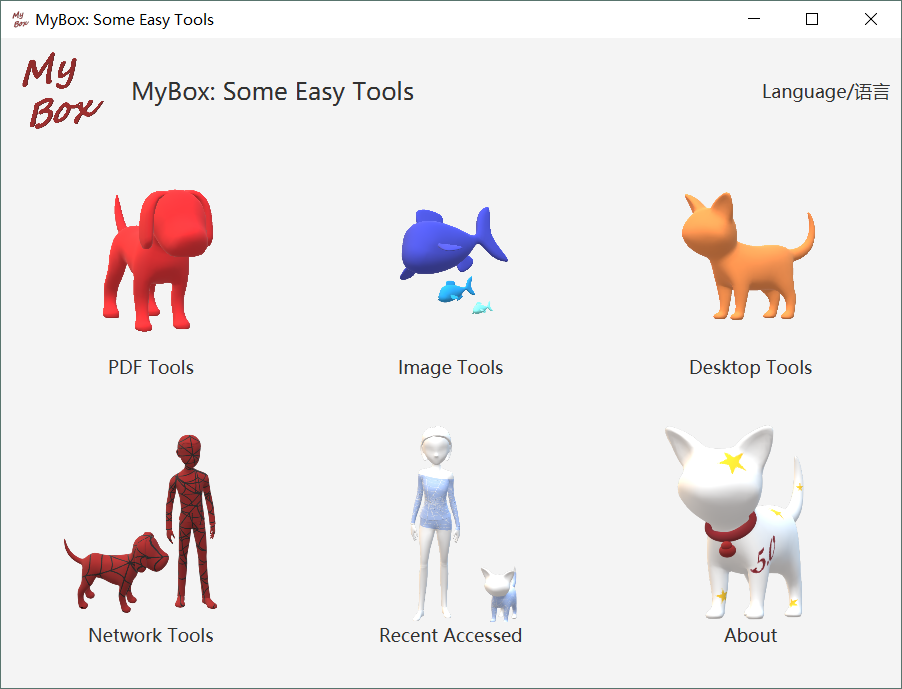

MyBox: Set of Easy Tools
This is GUI program based on JavaFx to provide simple and easy functions. It's free and open sources
Download
Packages of each version have been uploaded at Release directory now. You can find them by clicking "releases" tab in main page of this project.
EXE package MyBox-5.2-exe.zip is avaliable for users who have not java env. It need not installation and users can run the EXE directly after unpack it. (Please unpack it under path with pure-English name.)
Since Java is installed by default in Linux env and Mac env, the installation images are not made for the 2 platfroms. User can download jar file if JRE or JDK 8/9/10 is installed: MyBox-5.2-jar.zip
Launch
Double click "MyBox.exe" to launch MyBox on Windows. The default "Open Method" of image/text/PDF files can be associated to MyBox.exe and a file can be opened directly by MyBox by double clicking the file's name.
Run following command to launch this program with Jar package:
java -jar MyBox-5.2.jarA file path can follow the command as argument to be opened directly by MyBox. Example, following command will open the image:
java -jar MyBox-5.2.jar /tmp/a1.jpgLimitation
MyBox.exe can not be lanuched under path including non-English characters.
Java 11 has changed a lot, so MyBox may not work on Java env higher than 10. This is the last version based on Java 8 and later versions will be based on Java 12.
The embedded Derby is in single-application mode, so only one instance of MyBox can read/write db. That is, multiple instances of MyBox can run at same time but only the first one can save and visit configuration data while others can do most things except for accessing user's data.
Resource Addresses
Project Main Page
https://github.com/Mararsh/MyBox
Source Codes and Compiled Packages
https://github.com/Mararsh/MyBox/releases
Submit Software Requirements and Problem Reports
https://github.com/Mararsh/MyBox/issues
Cloud Storage
https://pan.baidu.com/s/1fWMRzym_jh075OCX0D8y8A#list/path=%2F
Online Helps
https://mararsh.github.io/MyBox/mybox_help_en.html
User Guides
https://github.com/Mararsh/MyBox/releases/download/v5.0/MyBox-UserGuide-5.0-Overview-en.pdf
https://github.com/Mararsh/MyBox/releases/download/v5.0/MyBox-UserGuide-5.0-ImageTools-en.pdf
https://github.com/Mararsh/MyBox/releases/download/v5.0/MyBox-UserGuide-5.0-PdfTools-en.pdf
https://github.com/Mararsh/MyBox/releases/download/v5.0/MyBox-UserGuide-5.0-DesktopTools-en.pdf
https://github.com/Mararsh/MyBox/releases/download/v5.0/MyBox-UserGuide-5.0-NetworkTools-en.pdf
Current Version
Current version is 5.2. Its features are mentioned below in summary.
Cross-platform
MyBox is implemented in pure Java and based on open source codes, so it can run any platform which supports Java 8/9/10.
This is the last version based on Java 8 and later versions will be based on Java 12.
Internationalized
All codes of MyBox are internationalized. User can switch language in time.
Currently MyBox supports Chinese and English. To support a new language is just to edit a new resource file.
PDF Tools
Image Tools
Image Manufacture
Multiple frames image file
Merge images
Part image
Big Image
View Image
Browse Images
Others
Data Tools
Matrices Calculation
Color Space
Desktop Tools
Manage Directories
Edit Texts
Edit Bytes
Others
Network Tools
Html Editor
Weibo Snaping Tool
Settings
Window
Development Logs
2019-6-30 v5.2 Improve image decoding. Adobe YCCK/CMYK jpg file can be viewed. Attributes and meta data of all images in multi-frames image file are read and displayed. PDF file can be viewed with bookmarks(Table of contents) and thumbnails. PDF file's attributes like author, version, user password, user permissions, and owner password etc can be modified. Matrices Calculation. Edit matrix data: adapt formatted data; transform matrix data into row vector, column vector, or another matrix in defined column number; generate identify matrix, random matrix, random square matrix automatically with defined column/row number. Unary matrix calculation: Transpose, Row Echelon Form, Reduced Row Echelon Form, Determinant By Elimination, Determinant By Complement Minor, Inverse Matrix By Elimination, Inverse Matrix By Adjoint, Matrix Rank, Adjoint Matrix, Complement Minor, Normalize, Set Decimal Scale, Set As Integer, Multiply Number, Divide By Number, Power. Binary matrices calculation: Plus, Minus, Hadamard Product, Kronecker Product, Horizontally Merge, Vertically Merge. Tools of Color Space: draw Chromaticity Diagram, edit ICC profile, adapt primaries of RGB Color Space, transform matrices between Linear RGB and XYZ, transform matrices between Linear RGB and Linear RGB，chromatic adaptation, standard illuminants, chromatic adaptation matrices. Fix bugs: “414 Request-URI Too Large” is returned in WeiBo snap tool constantly; tooltip blinks at edge of screen; some links do not work.
2019-5-1 v5.1 Interface: Controls are displayed in pictures which can be selected in 5 colors and whether display texts. Shorter tips to fit for 14 inches screen of laptop. Image tools: Extract/Add Alpha channel. Fix several problems, including error condition to filter transparent pixels in Image Manufacture. Happay Labor Day!
2019-4-21 v5.0 Select scope or area by dragging anchors. Doodle: Paste picture, draw shape(rectangle/circle/ellipse/polygon) line or fill color in shape, draw lines by dragging mouse, in image. Stroke width and color, line dotted can be set. View image: Set load size. Select whether show coordinate and rulers. Rotation can be saved. Browse Images: Grid Mode/Thumnails List Mode/File List Mode. Set load size. Rotation can be saved. Image Manufacture: Dithering can be applied to all scope types except for matting. Opacity can be made by Premultiplied Aplha for formats not supporting alpha. Blur margins. Shadow implemented in low level. Adjust size or margins by dragging anchors. Crop inside/outside in rectangle/circle/ellipse/polygon. Veritcal texts. Interface: Only display useful controls. Enough and not distracting tips. Shortcuts, major buttons, and default buttons. Monitor memory/CPU in time. View JVM properties. Refresh/reset windows. Restore last size of interfaces. Pop recent visited files/directories. Recent visited tools. Codes refactoring: Implement selection logic by subclass instead of switch statement, to move judgement outside loop. Avoid float calculation in loop. Rationalize inheritance and reduce duplication. Central management of stages' opening/closing to avoid threads residual.
2019-2-20 v4.9 Change image's contrast. Multiple algorithms are supported. Dithering can be selected when handle color quantization. Statistic data of image's color channels, including mean, variance, skewness, mode, midean, etc. Histograms. Recorder of images in system clipboard. Change font size any time. View images: copy/crop/save the selected area.
2019-1-29 v4.8 View PDF file in image mode. Density can be set. Pages can be cropped and saved as images. Locate function in Text/Bytes Editer: Go to the position of specified character/byte/line. Cut file, by files number, by bytes number, or by start-end list. Merge multiple files' bytes as a new file. A file path can follow program as argument to be opened directly by MyBox. On windows, the default Open Method of image/text/PDF files can be associated with MyBox.exe, to open a file by MyBox by double clicking the file name.
2019-1-15 v4.7 Edit Bytes. Input boxes of general ASCII characters. Break lines by bytes number or by some defined bytes. Find and replace in current page or in whole file, and count. Filter lines by "Include One", "Not Include All", "Include All", or "Not Include Any". Cumulative filter. Filtered results can be saved. Select whether include lines number. Select charset to decode bytes which can be viewed, scrolled, and selected synchronously. Paginate. Fit for viewing or editing very large file, such as binary file in size of several GBs. Page Size can be set. Make sure correction of finding, replacing, and filtering of bytes that are across pages. Convert line breaks of files in batching way. Merge "Rename Files" and "Rename Files under Directories". Image Blurring uses "Average Algorithm" which is good enough and quicker.
2018-12-31 v4.6 Edit Text: Detect line break automatically. Convert line break. Support LF(Unix/Linux), CR(iOS), CRLF(Windows). Find and replace. In current page, or in whole file. Filter lines. By "Include one of strings" or "Not include all of strings". Cumulative filter. Filtered results can be saved. Paginate. Fit for viewing or editing very large file, such as logs in size of several GBs. Page Size can be set. Make sure correction of finding, replacing, and filtering of strings that are across pages. Load and display first page, and scan the file in background to count characters number and lines number. Part of functions are unavaliable while counting. Interface will be refreshed automatically after counting process is complete. In progress interface, buttons "MyBox" and "Cancel" are added to have user use other functions or cancel current process.
2018-12-15 v4.5 Text Encoding. File charset can be either detected automatically or set manually. Target file charset can be selected to implement encoding conversion. BOM setting is supported. Hexadecimal codes can be viewed and selected synchronously. Line numbers are shown. Text Encoding conversion in batch way. Split image by size. Copy image or selected part of image in system clipboard(Ctrl-c). Crop and save part of image in interface of Image Viewer.
2018-12-03 v4.4 View/Extract/Create/Edit multiple frames image file. Support multiple frames Tiff file. For all operations which use image as input, handle situation of multiple frames image file. For all operations which use image as input, handle situation of big image which includes too many pixels to be loaded and displayed under limitation of available memory. Evaulate possiblility OutOfMemory and judge whether subsample image automatically. After that, show meaningful information and prompt for next step. Support splitting big image by only reading required part of data and writing while reading. Splitted results can be saved as multiple image files, multiple frames Tiff file, or PDF file. Support subsampling big image with options of sample region and sample ratio.
2018-11-22 v4.3 Support animated Gif. View: set interval, pause/continue, go special frame, next/previous frame. Extract: set from/to frames, target files' type. Create/Edit: add/delete images, adjust orders, set interval, whether loop, keep images' size or set images' size, save as, what you see is what you get. Easier and better Scope for Image Manufacture. Type:All, Matting, Rectangle, Circle, Color Matching, Color Matching in Rectangle, Color Matching in Circle. Color Matching can be against red/green/blue channel, saturation, brightness, hue, or whole RGB. Points set of matting and colors set of color matching can be added/deleted easily. All type of scope can be set as Excluded. Merge functions of "Color", "Filter", "Effect", and "Replace Color", to reduce interface elements and user inputs. Multiple Images Viewer: Number of files in each screen can be set; pictures are shown in balanced sizes.
2018-11-13 v4.2 Scope for Image Manufacture: All, Matting, Rectangle, Circle, Color Matching, Hue Matching, Rectrangle/Circle plus Color/Hue Matching. "Matting" is like Magic Wand of PhotoShop or "Bucket Fill" of Paint on Windows. Scope can be applied for Color Increasing/Deceasing, Filtering, Effects, Replacing Color, and Convolution. The scope can be determined by clicking image. Convolution Kernels Manager: Values of Gaussian Distribution can be filled in automatically; Option about how to handle pixels in edges is supported. Directories Rename: Strings can be used to filter files to be handled. Optimize and reorganize codes of Image Manufacture. More shortcuts.
2018-11-08 v4.1 Image Manufacture type of "Cover". Following can be set on an image: mosaic rectangle, mosaic circle, frosted rectangle, frosted circle, or picture. Area and size can be set for masaic or frosted cover. Internal pictures or user's pictures can be selected as cover, with options of size and opacity. Image Manufacture type of "Convolution". Convolution kernels can be picked to apply upon images. Batch way is supported. Convolution Kernels Manager. Kernels for image handling can be created/edited/deleted/copied. The matrix can be normalized automatically. The kernel can be tested. Example kernels are provided. New Image filters: Yellow/Cyan/Magenta channels.
2018-11-04 v4.0 New channels of Image Color Adjustment: Yellow, Cyan, Magenta. Yellow channel can be used to generate warm-toned image. New filter of image: Sepia, which is used to make picture old. New image effect: Emboss. Options like direction, radius, and whether changed as grayscale, can be set. Images blending. Options like defining intersected area and blending mode can be set. Online helps are enriched with important information.
2018-10-26 v3.9 Embed Derby database to save program's data. Make sure data are migrated from configuration file to db correctly. Image manufacture: Record updating histories to return former status. Can set whether record histories or set the number of the updating histories. English version of User Guides.
2018-10-15 v3.8 Optimize codes: Split the class ImageManufacture into classes of each function. Optimize interface: Make the tools more friendly. Set shortcuts. In Image Manufacture, more filters like Red/Green/Blue inverting, and "Outline" for text watermark.
2018-10-09 v3.7 In Weibo Snap Tool, load images sequentially by using javascript event. Make sure the minimum interval to avoid being judged as invalid access by server. Meanwhile monitor the maximum interval to avoid broken iteration due to missed picture or untriggered event by fast loading of small picture. "Effects" of image manufacturing, including blurring, sharpening, edge detecting, posterizing, and thresholding.
2018-10-04 v3.6 Optimize algorithm of Weibo Snap Tool to make sure all pictures loaded. Check codes to avoid meomry leak. Reduce brightness and saturation of background colors in interface styles. Add introduction about dpi-aware in document.
2018-10-01 v3.5 Optimize algorithm of Weibo Snap Tool to make sure all pictures loaded. Provide multiple interface styles.
2018-09-30 v3.4 Fix bugs: 1) In Weibo Snap Tool, adjust the judge conditions of loading pages to make sure all information in the pages can be saved. 2) When close/switch window and task is running, and user select "Cancel", current window should not be closed. New features: 1) Can set the maximum main memory for PDF operations. 2) Can clear peasonal settings.
2018-09-30 v3.3 Solve the problem of Weibo website certificate finally. Verified on Windows, CentOS, and Mac.
2018-09-29 v3.2 Weibo Snap Tools: 1) Import certificate automatically on Linux and Windows to have users need not login. But have no way on Max, so users of Apple computer will have to login Weibo to use Weibo Snap Tool. 2) Can expand all comments and all pictures in the pages before make snapshots. 3) Can save the original pictures of the pages.(Cooooooool)
2018-09-26 v3.1 All image operations can be done in batch way. Fix and optimize algorithms of Color manufacture. Set default font size to fit for different resoltuions in different environments. Seperate User Guides for each type of tools. Prompt user to login Weibo to install its SSL certificate before start to use Weibo Snap Tools. I am looking for the way to remove this limitation because MyBox has not any interest of touching any provate information of users.
2018-09-18 v3.0 Improve Snap Tool for Weibo: Only snap meaningful area in the page, by which half time is cost and half size of PDF files is saved. Can expand the comments of messages. I am so proud of this feature! Can set the maximum size of merged PDF. Fix bugs of Html Editor and enhance its functions.
2018-09-17 v2.14 Improve Snap Tool for Weibo: Retry times of failure; Do not mergin month's PDF file when pages of the month is more than 10.
2018-09-15 v2.13 Show Reference Image and Scope Image seperately. Make sure no thread runnig after program exits. Compress images in PDF in batching way. Snap Tool for Weibo, backup contents of any weibo account automatically. Duration can be set. Both PDF files and html files can be saved. Weibo pages are loaded dynamically, so locally backed pages can not be loaded and shown correctly. They are backed just for texts in the pages. This tool might fail to work when weibo would change the accessing channel of pages in future. Who know~
2018-09-11 v2.12 Combine images as PDF file, Compress images in PDF, combine PDF files, split PDF. Support Chinese written in PDF file, and system font file is locating automatically while user can input ttf file path. Prompt information is shown more smoothly and friendly. In web browser, font size can be zoom in and zoom out, and web page can be snapped into PDF file with settings of delay and PDF page size.
2018-09-06 v2.11 Image combining which supports array options, background color, interval, edges, and size options. Web browser supports synchronized contents with web editor and snapshots of the whole web page in one image. Image maunfacture like shadow, arced corners, adding edges. Implement manufacture of big image and make sure performance is acceptable.
2018-08-11 v2.10 Image Spliting which supports equipartition and custom. Scope of image manufacture is easier to use. No number limition is for multiple image files viewed in same screen now.
2018-08-07 v2.9 Image croping. Scope, including area scope like rectangle and circle and color matching, is supported for image manufacture.
2018-07-31 v2.8 Image edges' cutting. Watermark in image. Undo and redo for image manufacture. Html editor. Text edior.
2018-07-30 v2.7 Image transform, including rotating, mirroring, and shearing.
2018-07-26 v2.6 Improve color replacement: Support original colors' list and hue distance. Support opacity adjustment.
2018-07-25 v2.5 Color palette. And Replace colors in image, by accurate matching of color, or by colors' distance. Color replacement can be used to change the background color of images or eliminate color noise of images.
2018-07-24 v2.4 Improve functions of Image Manufacture and Multiple Images Viewer: Smoothly switching, reference image, and pixels adjustment.
2018-07-18 v2.3 Alarm clocks, with options of time and ring. Support rings of "Meow", wav, and mp3. Can run in background. Thanks my GuaiGuai for her contribution of "Meow".
2018-07-11 v2.2 Fix bug about threads' logic. Files rearragement that categories files under new directories according to their modify time or create time. This function can be used to handle photoes, games screenshots, or system logs which need archived based on time.
2018-07-09 v2.1 Improve interface of image manufacturing and support images borwsering. Directory synchronization, with options like copying subdirectoies, new files, modified files after some time, original file's attributes, or deleting files and directories which are not in source path, etc.
2018-07-06 v2.0 Extract texts from PDF files in batching way. Convert image files to other formats in batching way. Rename files under directories, with options about files' name and sorting. All of or part of renamed files can be recovered as originl names.
2018-07-03 v1.9 Fix issues. Customize page separator line when extract texts from PDF. Improve image manufacture: Adjust saturation, lightness, and hue with parameters and provide filters like gray, invert, or binary.
2018-07-01 v1.8 Extract texts from PDF files. Manufacture image: Adjust saturation, lightness, make it gray, or invert the color.
2018-06-30 v1.7 Improve Pixels Calculator. Support to view multiple images in same screen.
2018-06-27 v1.6 Convert image files to other formats, with options of color, size, compression, quality, etc. Pixels Calculator. Support more image formats: gif, wbmp, pnm, pcx.
2018-06-24 v1.5 Extract images from PDF and save as original format. Support extracting and converting in batching way. Thanks helps from "https://shuge.org/" who asked the requirement of extracting images from PDF.
2018-06-21 v1.4 Support reading/writing meta-data of images in format of png, jpg, bmp, tiff. Thanks helps from "https://shuge.org/" who asked the requirement of Meta-data of images.
2018-06-15 v1.3 Fix the gray calculation in OTSU; Optimize shared codes; Support PDF password; More friendly interface .
2018-06-14 v1.2 Add options of color conversion for binary image type. Save user's choices. And optimize reading of hellp document. Thanks helps from "https://shuge.org/" who asked the requirement of binary conversion of color with threshold.
2018-06-13 v1.1 Add: image format TIFF and RAW, options of Compression Type and Quality, and Help information. Thanks helps from "https://shuge.org/" who asked the requirement of TIFF format
2018-06-12 v1.0 Convert each page of PDF file to an image with options of format, density, color, compression, and quality. And user can pause/continue the conversion.
Implementation
MyBox is developed with Netbeans8.2 and JavaFX Scene Builder 2.0:https://www.oracle.com/technetwork/java/javafxscenebuilder-1x-archive-2199384.html
It is based on following open sources softwares or libraries:JavaFx https://docs.oracle.com/javafx/2/
PDFBox https://pdfbox.apache.org/
jai-imageio https://github.com/jai-imageio/jai-imageio-core
javazoom http://www.javazoom.net/index.shtml
log4j https://logging.apache.org/log4j/2.x
Derby http://db.apache.org/derby/
GifDecoder https://github.com/DhyanB/Open-Imaging
EncodingDetect https://www.cnblogs.com/ChurchYim/p/8427373.html
Free Icons https://icons8.com/icons/set/home
Main Interface
